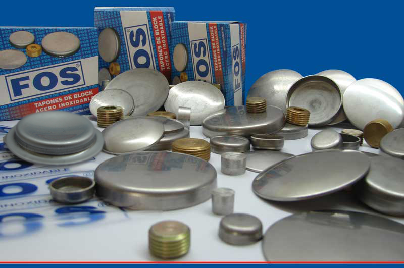

Inicio
La Empresa
Productos
Preguntas Frecuentes
Contacto
Bienvenido a la página de Tapones FOS

FOS
le propone la utilización de sus
TAPONES DE BLOCK DE ACERO INOXIDABLE AISI 304
TECNICAMENTE COMPATIBLES, DURABLES E INALTERABLES